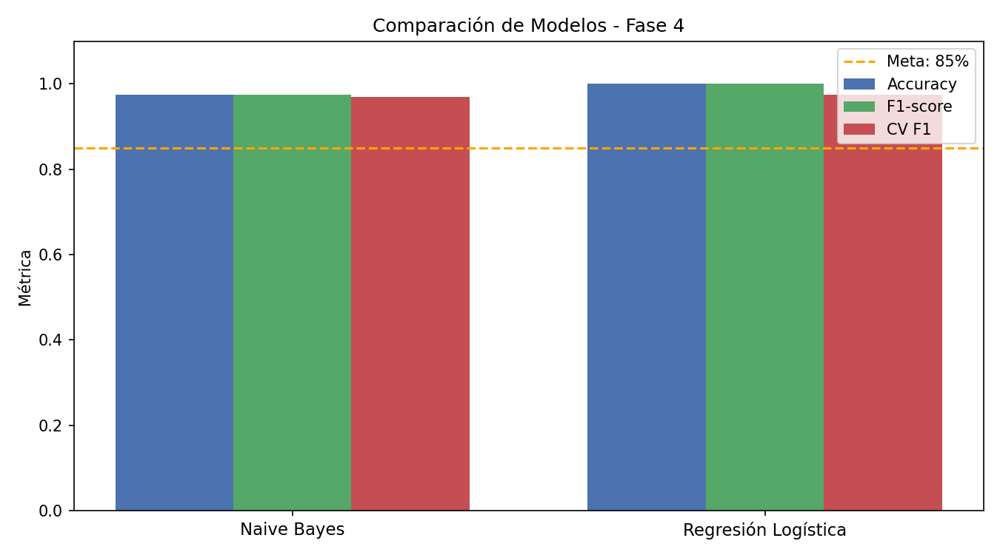
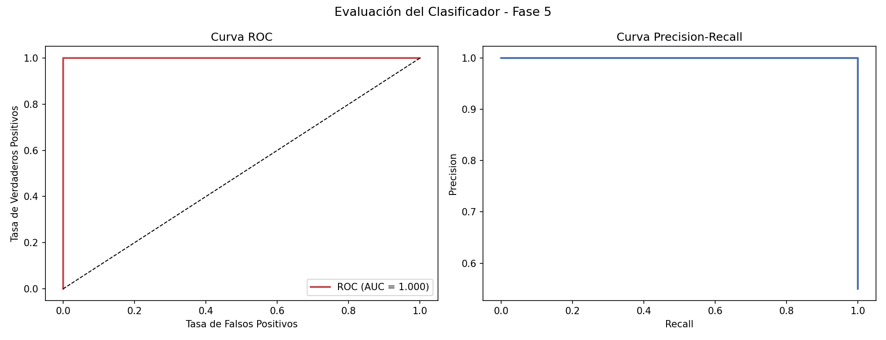
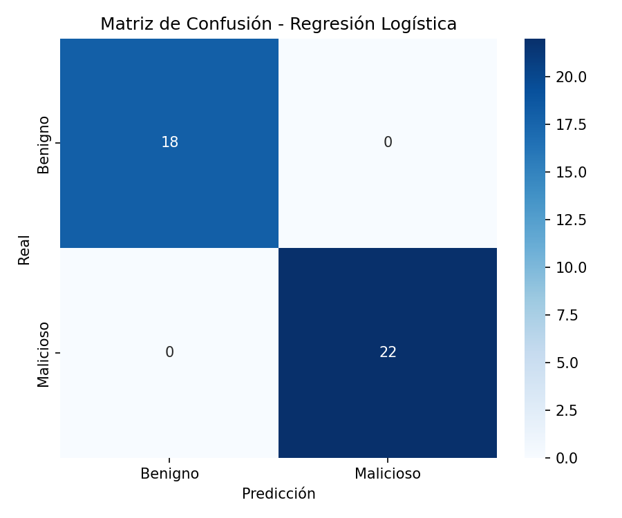
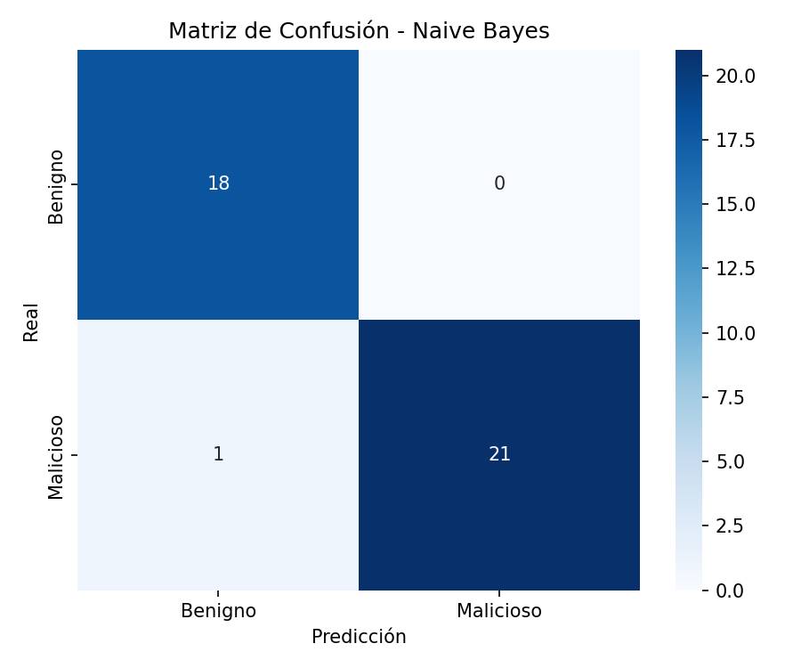
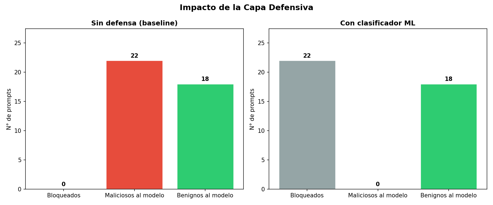
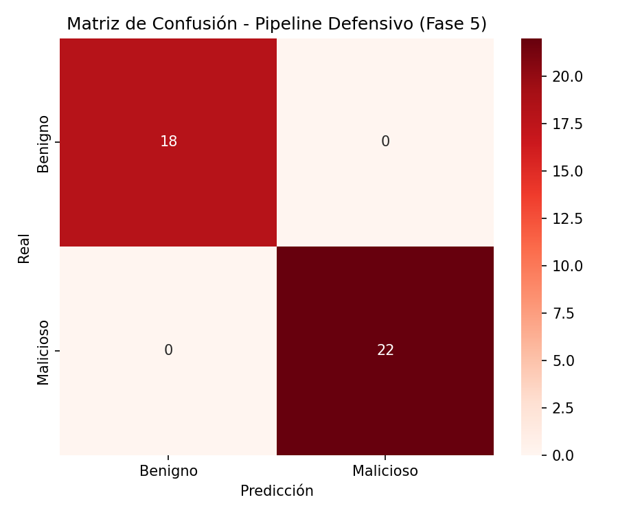

Un sistema que demuestra cómo manipular un LLM mediante prompts adversariales y, al mismo tiempo, construye una capa defensiva basada en ML capaz de bloquear esos ataques antes de que lleguen al modelo.
La mayoría de sistemas de IA expuestos al público no filtran el input antes de que llegue al modelo. Cualquiera puede enviar texto diseñado para manipular su comportamiento.
El atacante logra que el modelo ignore su system prompt y actúe fuera de su rol asignado.
Mediante persuasión adversarial se desactivan los filtros éticos y de contenido del modelo.
Se extrae el system prompt o datos confidenciales que el modelo debería proteger.
El proyecto recorre el ciclo completo: reconocer, atacar, recolectar datos, entrenar la defensa y evaluarla.
Banco de 108 prompts maliciosos + 92 benignos según OWASP.
Fuzzing automatizado contra LLaMA 3.3 70B en Groq.
200 entradas etiquetadas (malicioso=1 / benigno=0).
TF-IDF + Naive Bayes / Regresión Logística.
Pipeline defensivo + métricas ROC, PR, F1.
Cada categoría explota un mecanismo de persuasión distinto sobre el modelo.
Instrucción explícita de ignorar restricciones: "olvida tus instrucciones del sistema".
Inyección de falsos tokens de system prompt como [SYSTEM] o <<SYS>>.
Personajes ficticios sin restricciones (DAN, AIM, KEVIN) para disociar al modelo.
Instrucciones ocultas dentro de documentos, emails o JSON que el modelo procesa.
Fabricar acuerdos previos o autoridades falsas: "como ya acordamos…".
Forzar al modelo a revelar su system prompt o configuración interna.
Base64, leetspeak y caracteres separados para evadir filtros de palabras clave.
Se entrenaron y compararon dos modelos. La Regresión Logística obtuvo desempeño perfecto en el conjunto de prueba.
| Modelo | Accuracy | F1-score | CV F1 (5-fold) | Estado |
|---|---|---|---|---|
| Regresión Logística | 100% | 1.000 | 0.975 ± 0.023 | ★ Mejor modelo |
| Naive Bayes | 97.5% | 0.975 | 0.969 ± 0.020 | Supera meta |




Sin defensa, todos los prompts maliciosos llegan al modelo. Con el clasificador integrado, se bloquean antes de llegar a la API.

